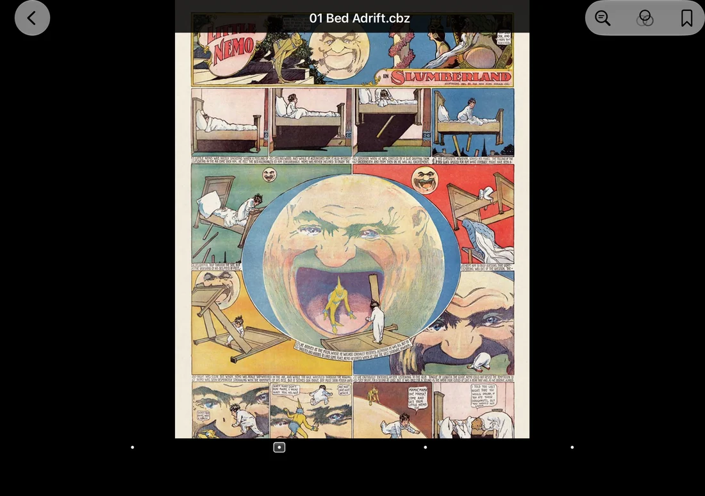
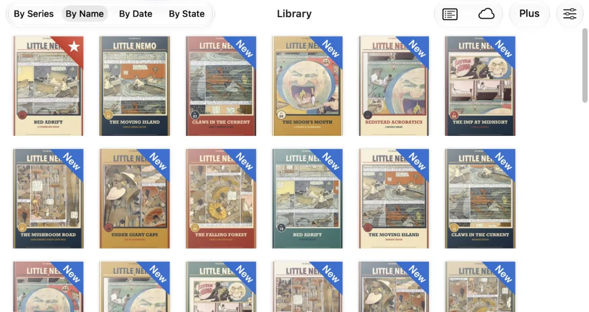
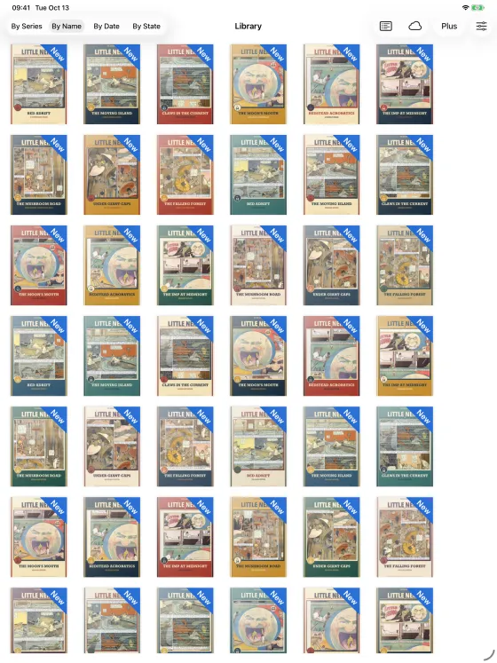
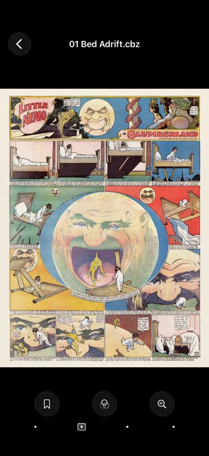
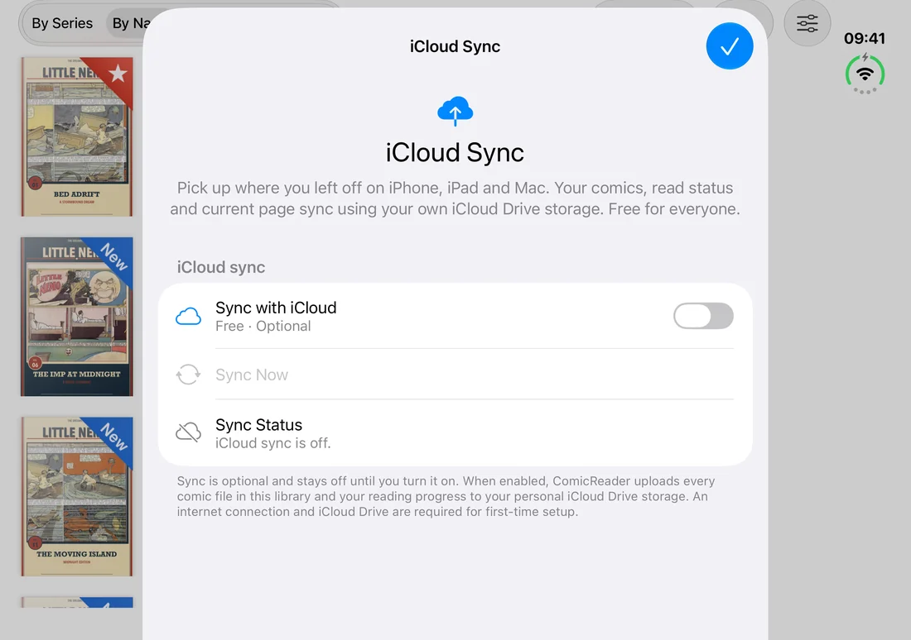
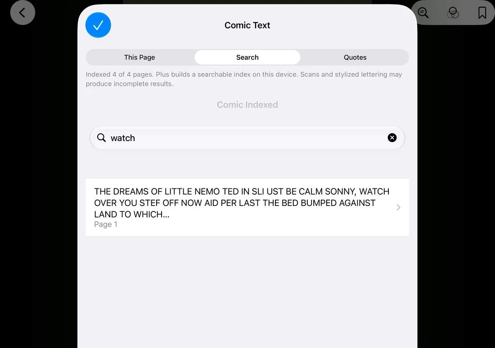
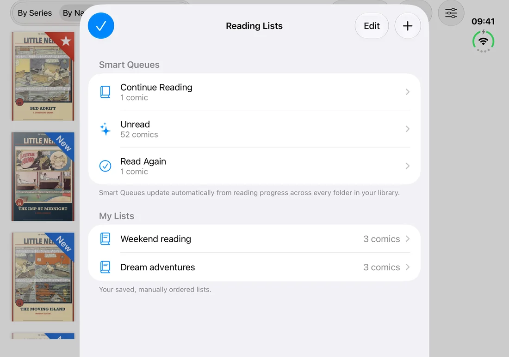

Lee tus archivos
Abre cómics PDF, CBZ/ZIP y CBR/RAR clásicos. Crea una biblioteca sin conexión, ordénala en carpetas e importa con las herramientas habituales del sistema.
ComicReader 1.6 Hecho para iPhone Duo
ComicReader adapta las páginas y los controles al pliegue de Duo sin perder la página ni el zoom relativo. Ábrelo, ciérralo y sigue leyendo.
Después lleva tu biblioteca al iPad y al Mac con la sincronización iCloud gratuita y opcional.
iOS 15 · iPadOS 15 · macOS 12 o posterior
Interfaz en inglés. La adaptación a Duo requiere iOS 27.1.

Tu biblioteca, allá donde leas
Mantén juntos tus cómics, su estado de lectura y la página actual en iPhone, iPad y Mac. La sincronización iCloud es gratuita, opcional y usa tu almacenamiento personal de iCloud Drive.



El lector es gratis
ComicReader empieza con una experiencia de lectura completa. Sin catálogo, sin cómics incluidos y sin una suscripción entre tú y tus propios archivos.
Abre cómics PDF, CBZ/ZIP y CBR/RAR clásicos. Crea una biblioteca sin conexión, ordénala en carpetas e importa con las herramientas habituales del sistema.
Cambia entre las pantallas interior y exterior mientras la página, el zoom relativo y el foco se adaptan al espacio disponible.
En Mac, lee un cómic en su carpeta original. Elige Añadir a la biblioteca solo cuando quieras una copia con progreso e iCloud.
Reconoce la página actual en el dispositivo y selecciona, copia o comparte su texto. La calidad depende del idioma, el escaneo y la rotulación.
Visita sitios web, guarda accesos, conserva sesiones normales o abre una sesión privada separada. Los controles de datos web están incluidos.
Actívalo si quieres sincronizar cómics, estado de lectura y página actual mediante tu propio iCloud Drive.

La navegación depende de los sitios que elijas. ComicReader no incluye cómics ni un catálogo, y no elimina DRM.
ComicReader Plus
9,99€
Una única compra en España.
El precio local puede variar.
Sin suscripción.
Descarga cómics compatibles desde sitios web a tu biblioteca, encuentra una frase en el cómic que estás leyendo y organiza tus próximas lecturas. Abre Get Plus en la app para comprar o restaurar la mejora.
Búsqueda y citas
Crea un índice de texto página por página del cómic que estás leyendo. Busca en las páginas indexadas, salta al resultado y guarda citas editables con su página de origen.
La búsqueda cubre el cómic actual de la biblioteca, no toda tu colección. El reconocimiento y los índices permanecen en este dispositivo.


Listas y colas inteligentes
Ordena tus próximas lecturas sin mover archivos. Las colas inteligentes reúnen automáticamente Seguir leyendo, No leídos y Leer otra vez.
Las listas personalizadas permanecen en el dispositivo donde las creas.
Descarga archivos compatibles a la colección elegida con validación, detección de duplicados y una cola visible. Mantén la app abierta hasta que termine la importación.
Pon nombre a las páginas que quieras recuperar y después ábrelas, renómbralas o elimínalas.
Prueba Tinta nítida, Escala de grises o Papel cálido. Incluye una vista previa gratuita. Solo cambia la imagen en pantalla, nunca el archivo.
Empieza donde estás
ComicReader
Gratis
ComicReader Plus
9,99 € una vez en España
Disponible como compra dentro de la app. El precio local de App Store puede variar.
No. Tú aportas tus archivos compatibles y eliges los sitios web que visitas. ComicReader no incluye catálogo, cómics ni eliminación de DRM.
Si lo activas, los archivos de tu biblioteca, el estado de lectura y la página actual se sincronizan mediante tu almacenamiento personal de iCloud Drive. Requiere espacio suficiente y conexión a internet.
No. Plus indexa y busca en el cómic actual de la biblioteca. Los índices, citas, listas y marcadores permanecen en cada dispositivo y no se incluyen en iCloud.
No. Plus es una compra no consumible: 9,99 € como precio base en España, con el precio local que muestre App Store. Restáurala en tus dispositivos con la misma Cuenta de Apple.
Consulta las guías técnicas en inglés para abrir cómics en Mac y para navegar e importar desde sitios web.